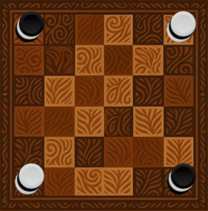

Kona
Board Game Arena 官方规则文档
Kona
Kona is a two-player abstract strategy game designed by Germán Kijel. Each player controls either poodle or capibara pieces with the goal of creating a line of three pieces of their own color—ortogonally, or diagonally. Alternatively, a player can win by blocking their opponent so they are unable to make any legal move.
In Swahili, "Kona" means "corner" or "turn."
Objective
The objective of the game is to form a straight line of three consecutive pieces of the same color (horizontal, vertical, or diagonal), or to block your opponent so they cannot make a legal move on their turn.
Components
- 1 game board with a 6x6 grid.
- 6 white pieces.
- 6 black pieces.

Setup
- Place the pieces on the board in the following pattern:
- In the four corners of the board, place stacks of three pieces with alternating colors:
- Two opposite corners with the pattern: White-Black-White (from bottom to top).
- The other two corners with the inverted pattern: Black-White-Black.
- In the four corners of the board, place stacks of three pieces with alternating colors:
- On the diagonal squares adjacent to the corners, repeat the inverted stacking pattern to create alternating towers.
At the end of the setup, the board will have towers distributed across the corners and their diagonals.
Gameplay
Turns
- Players alternate turns.
- The player controlling the white pieces goes first.
Movement
- A piece can only be moved if it is on top of a stack.
- It moves a number of spaces equal to the height of the stack it comes from.
- Movement must be in a straight line—horizontal, vertical, or diagonal.
- You cannot jump over other stacks or move off the board.
- A piece can land on:
- An empty square
- A stack with one piece
- A stack with two pieces
- It cannot land on a stack with three pieces.
Restrictions
- Only one piece may be moved per turn.
- On the first turn:
- Both players may move a piece 1, 2, or 3 spaces.
- The second player may not land on the square just occupied by the first player, nor jump over it.
Victory Conditions
A player wins by meeting one of the following conditions:
- Forming a straight line of three consecutive pieces of their color (horizontal, vertical, or diagonal).
- Blocking the opponent so they cannot make a legal move.